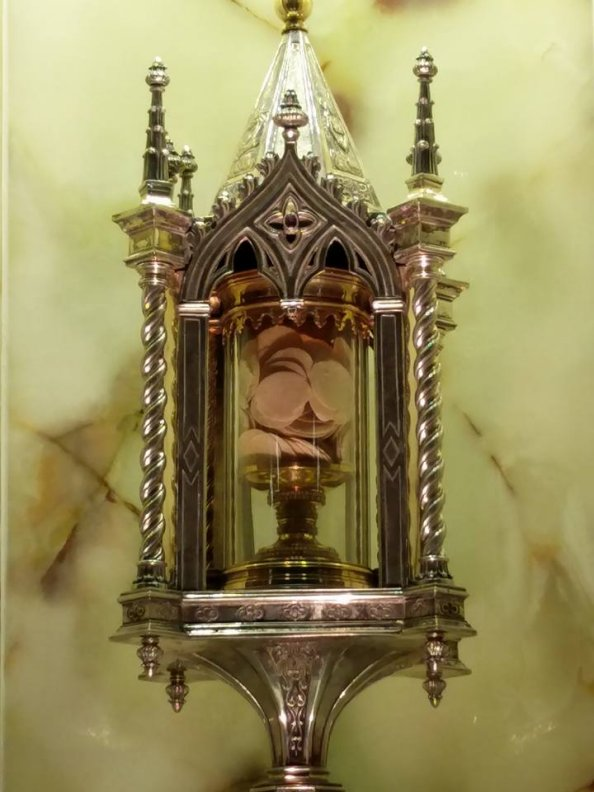

PREFÁCIO
Este site apresenta um roubo abominável na Igreja de São Francisco na cidade de Siena na Itália, fato que causou admiração, espanto e perplexidade pela audácia e terrível procedimento dos autores. Na verdade, todas as pessoas que vivem dignamente ao deparar com acontecimentos tristes e abomináveis dessa natureza, em que pessoas de péssimo caráter, tramam minuciosamente e golpeiam um templo religioso com tal furor e audácia, para roubar utensílios sagrados, principalmente aqueles que são depositários de Hóstias Consagradas, evidentemente, ficam abismados e cheios de admiração, revoltados com a execrável e tão grande torpeza.
Por outro lado, com o mesmo grau de repulsa e tristeza contra os assaltantes do roubo,
sabemos que existem os intermediários e 
Em muitos casos, os protagonistas quando presos, diante das autoridades apresentam justificativas visando mascarar ou fantasiar o tipo do acontecimento, utilizando um arsenal de desculpas e lançando argumentos mentirosos que são vazios, isentos de realidade porque sem ancoragem verídica, e por isso mesmo, deixam exalar o odor fétido da trama e do abominável conluio maldito e condenado.
Neste site observarão com tristeza essa realidade do assalto a um Templo Religioso, em que o furto foi exatamente o roubo de um valioso Ostensório, uma verdadeira obra de arte, bonita e valiosa, contendo 348 Hóstias Consagradas inteiras e mais 6 metades de Hóstias, nele hospedadas. E que fizeram os bandidos? Jogaram as Hóstias Consagradas num deposito de lixo público colocado na calçada de uma rua próxima a Igreja, e foram vender a “obra de arte” valiosa a um receptador!
Torna-se evidente e inquestionável, que se trata de pessoas que desprezam o direito, a justiça e nem cultivam a Caridade, vivem mirando com sua ganância financeira com os olhos fixos em buscas de vantagens, apossando-se de bens alheios, não considerando nenhum tipo de consequência, sempre atuando com maneiras violentas e covardes.
Nós do APOSTOLADO DOS SAGRADOS CORAÇÕES nos irmanamos ao povo de Siena na Itália, lamentando o ocorrido e aplaudindo todo o tipo de punição corretiva que deve ser aplicada com toda energia aos bandidos e malfeitores, ou seja, aos "ladrões e receptadores".
“APOSTOLADO DOS SAGRADOS CORAÇÕES”
http://apostoladosagradoscoracoes.angelfire.com/